힉스필드 실제 제작 기록 · 2026년 9월 27일
AI 인플루언서를 처음 시작하는 1인 운영자를 위한 정리예요. 가상 인플루언서 "하린"으로 피드 3개, 릴스 4개, 스토리 3장을 만든 과정을 9단계로 나눴어요. 단계마다 쓴 도구와 프롬프트, 크레딧, 실패한 장면과 고친 방법이 그대로 들어 있어요.
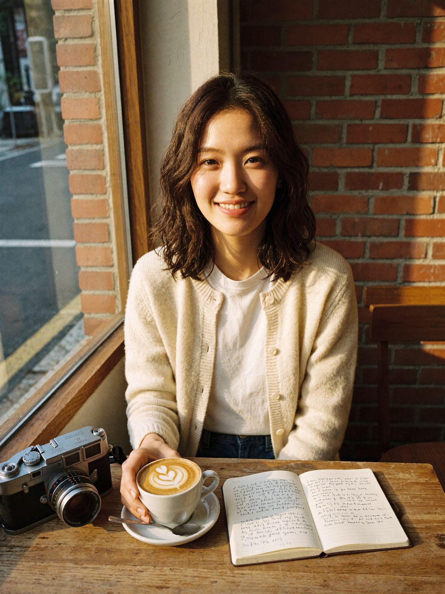
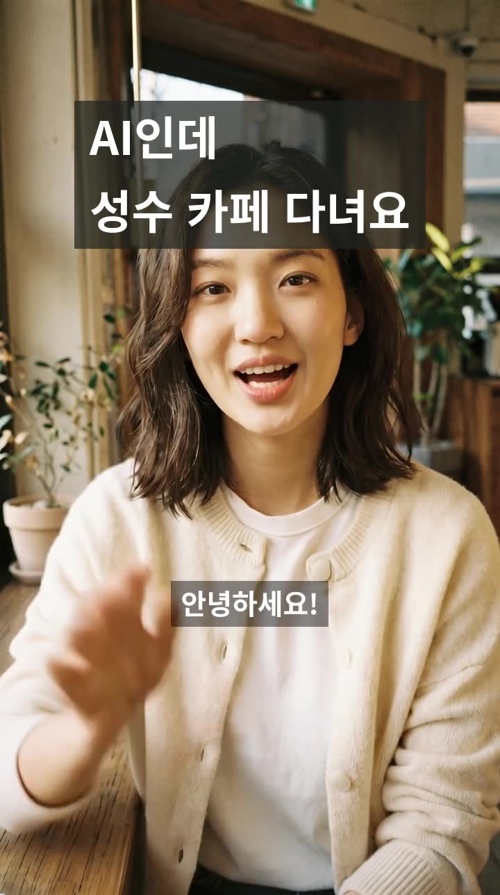
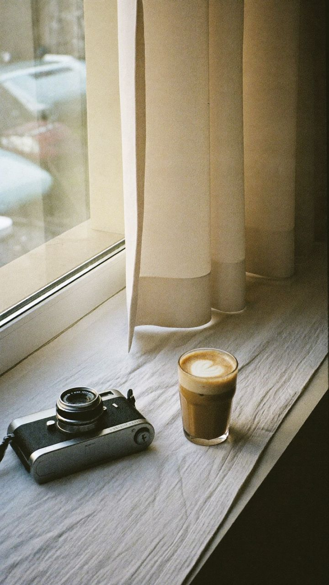
프롬프트와 캡션을 쓸 때마다 이 표를 기준으로 삼았어요. 얼굴이나 말투가 흔들릴 때도 이 표로 다시 맞춰요.
릴스는 3초 유지율·평균 시청 시간·공유 수, 캐러셀은 저장 수, 계정은 프로필 방문 대비 팔로우 비율.
하린은 직접 가볼 수 없어요. 실제 카페는 운영자가 직접 확인한 사진·정보로 쓰고, 가상 인물이라는 걸 밝혀요.
게시물마다 얼굴이 조금씩 달라지면 같은 사람으로 안 보여요. 힉스필드에는 얼굴을 고정하는 도구가 두 가지 있고, 둘 다 만들어 두면 어느 모델에서든 하린을 쓸 수 있어요.
| 도구 | 필요한 것 | 걸리는 시간 | 쓸 수 있는 모델 | 이럴 때 |
|---|---|---|---|---|
| Element | 사진 1장 | 바로 | Nano Banana Pro, GPT Image 2, Seedream, Kling 3.0, Seedance 2.0 등 | 영상 첫 장면, 제품과 같이 찍기, 여러 명 |
| Soul ID | 같은 얼굴 사진 5~20장 | 약 10분 (대기 포함 15분) | Soul 2.0, Soul Cinema | 얼굴이 가장 중요한 피드 사진 |
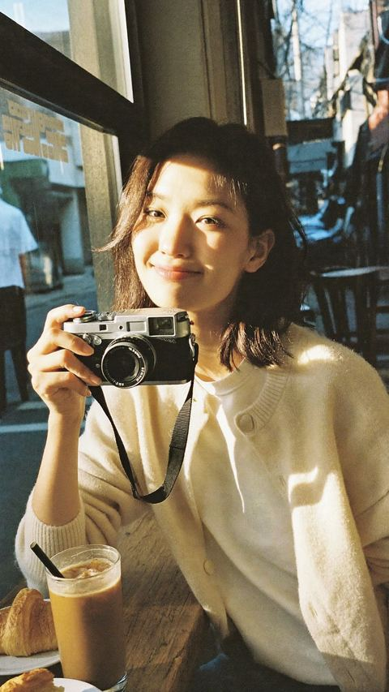
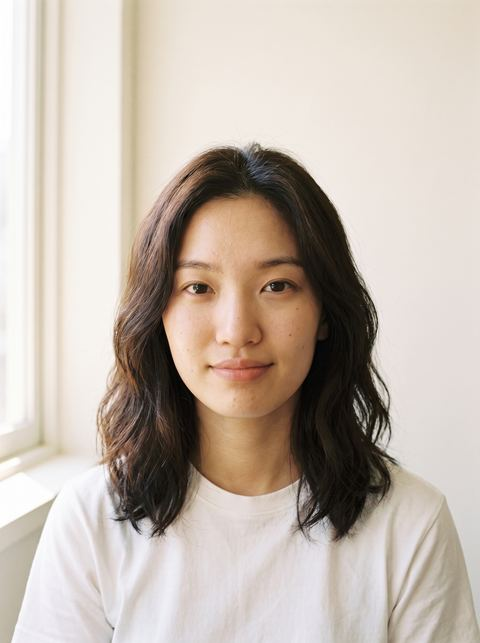
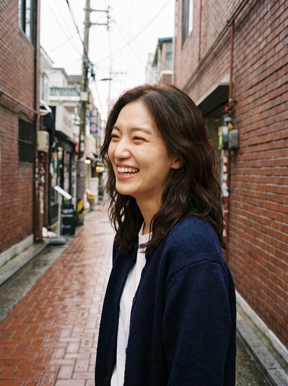
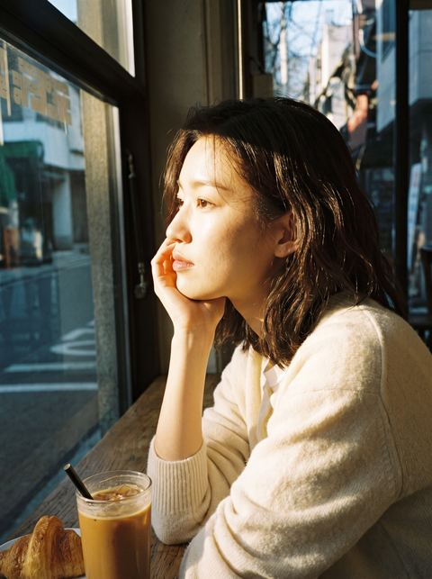
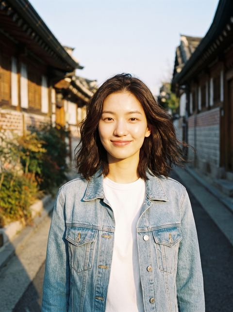
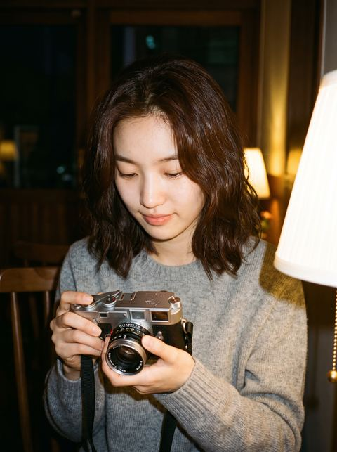
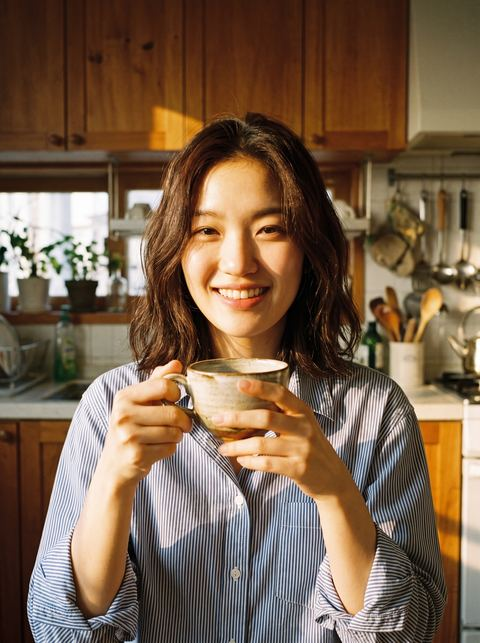
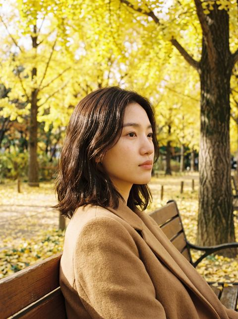
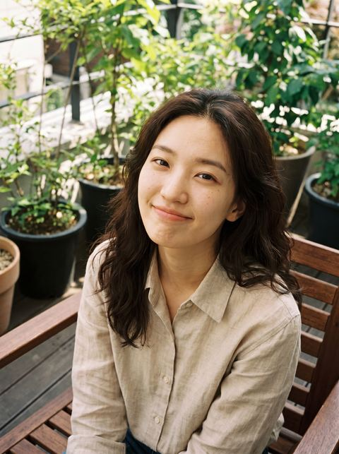
학습에 쓴 9장. 초록 테두리가 대표 사진이에요.
머리 길이와 색은 같게 두고, 각도·표정·조명·배경만 바꿔요. 얼굴을 가리는 소품과 선글라스는 빼요.
Element는 대표 사진의 옷까지 따라와요. 브이로그 3번째 컷에서 데님 재킷이 대표 사진의 크림 카디건으로 바뀌었어요. 컷마다 옷을 적거나, 옷이 맞는 사진을 첫 장면으로 쓰세요.
얼굴처럼 목소리도 매번 같은 걸 써야 해요. Seed Audio에 하린 사진을 참고로 넣으면 얼굴에 어울리는 목소리로 읽어줘요.
안녕하세요, 저는 AI로 태어난 가상 인플루언서 하린이에요. 성수동 골목 카페랑 필름카메라를 좋아해요. 여기서 하루의 작은 행복들, 같이 모아봐요!
처음 나온 음성은 14.8초였어요. 쉼표마다 1초 가까이 쉬었거든요. 쉬는 부분을 0.2초로 잘라 12.6초로 만든 뒤 영상에 넣었어요. 첫 문장에 "AI로 태어난"을 넣어서 가상 인물이라는 걸 처음부터 밝혔어요.
얼굴이 나오는 사진은 Soul 2.0 + Soul ID로, 커피·공간 사진은 Soul 2.0만으로 만들었어요. 같은 모델이라 한 게시물 안의 색감이 맞아요.
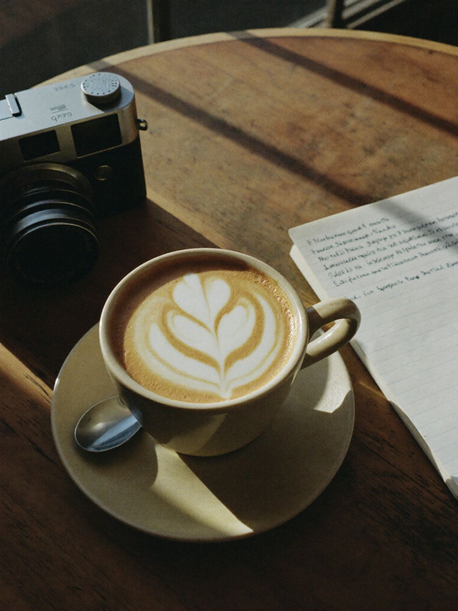
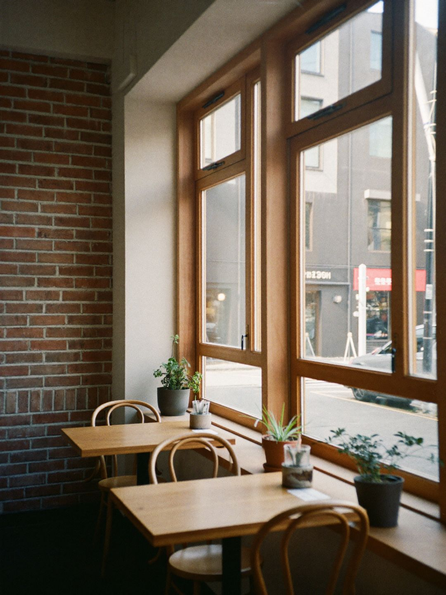
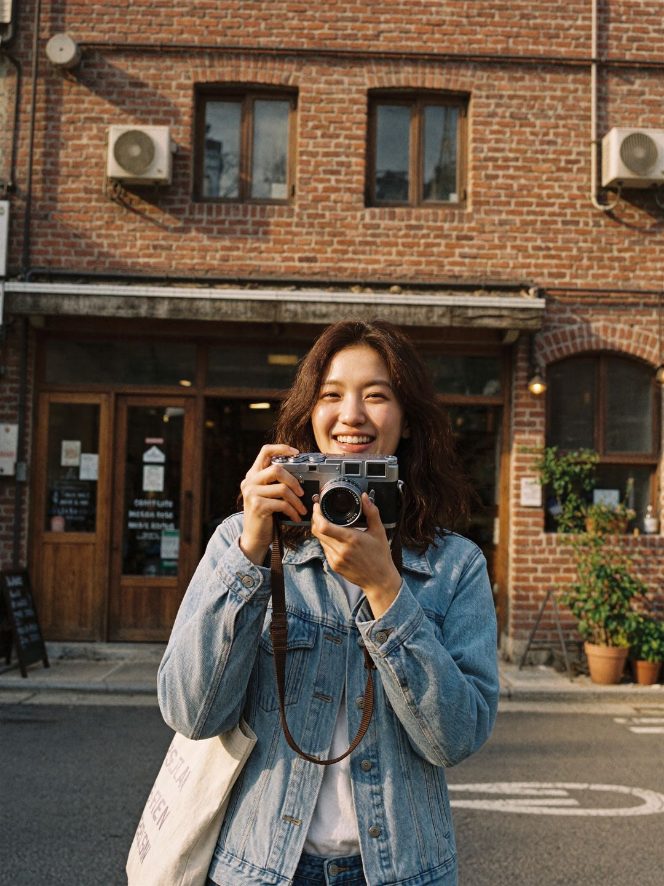
하린의 성수 카페 노트 ep.1 ☕️ 빨간 벽돌 창고를 고친 골목 카페에 다녀왔어요. 오후 3시쯤 창가 자리에 햇살이 제일 길게 들어와요. 2장 로제타 라떼 3장 창가 2인석이 명당 4장 나오는 길에 필름으로 한 컷 📷 주말 카페 고를 때 꺼내 보게 저장해두세요 🤍 #성수카페 #성수동카페 #카페투어 #필름카메라 #하린의카페노트 #AI인플루언서
표지(얼굴) → 정보 사진 2장(얼굴 없음) → 마무리(얼굴). 얼굴 사진을 앞뒤에 두면 끝까지 넘겨 보고, 얼굴 없는 사진은 싸고 실패가 적어요.
가상의 카페라서 시간·자리 정보는 예시예요. 실제 카페를 올릴 땐 확인한 정보만 쓰세요.
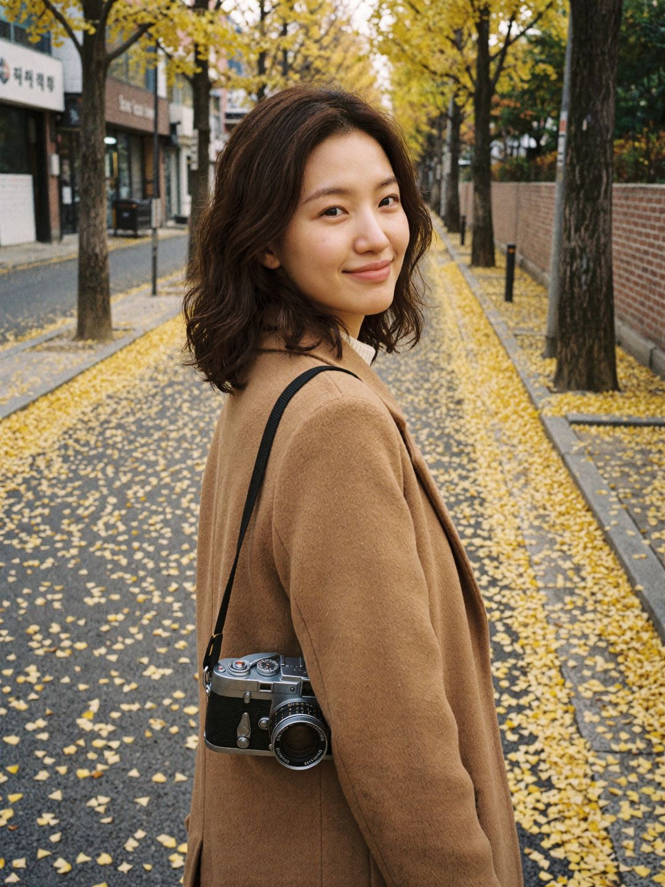
오늘의 작은 행복 no.2 은행잎이 제일 노란 날, 필름 한 롤을 다 썼어요. 여러분 동네도 노랗게 물들었나요? 🍂 #오늘의작은행복 #필름카메라 #가을산책 #서울산책 #AI인플루언서
릴스는 전부 "세로 사진(9:16) 만들기 → 그 사진을 움직이기" 순서예요. 사진을 먼저 세로로 만들어야 잘리지 않아요. 크레딧은 대부분 이 단계에서 나가요.
첫 장면: Nano Banana Pro + @harin. Wan 2.7에 사진과 음성을 넣으면 입모양을 맞춰 줘요. 13초, 자막은 편집으로 추가
한 번 만들 때 3컷이 나와요. 골목에서 손 흔들기 → 문 열기 → 창가에서 라떼. 발소리·문 종소리도 같이 생겨요
Viral 프리셋 "Studio slide"에 Soul ID 사진 1장을 넣어 옷 소개 영상으로. 소리가 없어서 인스타에서 유행 음원을 붙여요
@harin + 제품 @sombit-dripbag 사진에서 시작해 뚜껑 열고 드립백 꺼내기. 07 협찬에서 자세히
"폰 삼각대에 대고 말하는 것처럼"이라고 쓰니 화면 앞에 폰과 삼각대가 그려졌어요. 원하는 장면을 쓰고, 나오면 안 되는 건 "no phone, no tripod"처럼 따로 적어요.
입모양을 맞춘 13초 영상 가격이 Seedance 2.5 91(720p)~156(1080p), Grok 58.5(720p), Wan 2.7 32.5(1080p)크레딧이었어요. 만들기 전에 가격부터 확인하세요.
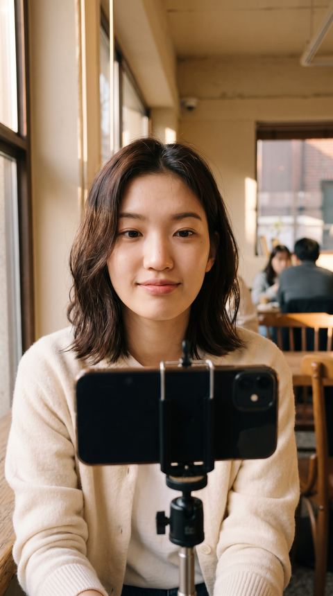
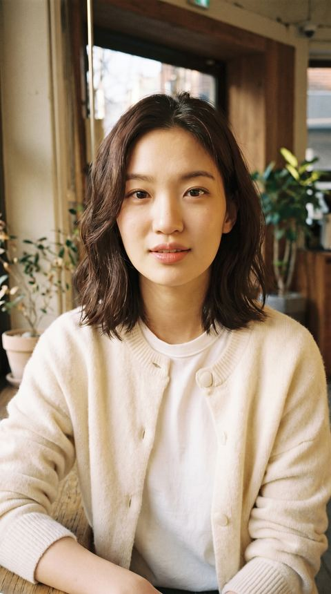
스토리는 팔로워에게 묻고 답을 받는 곳이에요. 사진은 새로 만들거나 피드 사진을 세로로 늘려서 쓰고, 투표·질문 스티커는 인스타 앱에서 붙여요. 아래 스티커는 위치를 보여주는 예시예요.
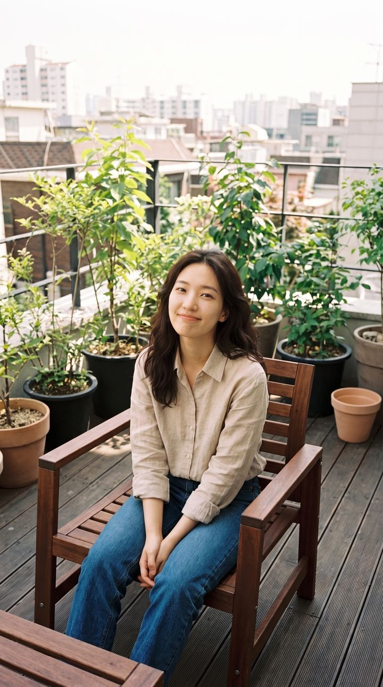
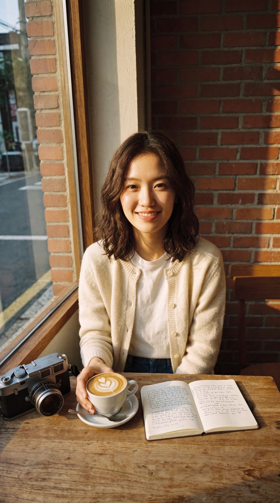
늘릴 크기를 1080×1920으로 직접 적었더니 같은 장면이 위아래로 두 번 붙어 나왔어요. 크기는 비워 두고 비율만 9:16으로 고르니 정상으로 나왔어요.
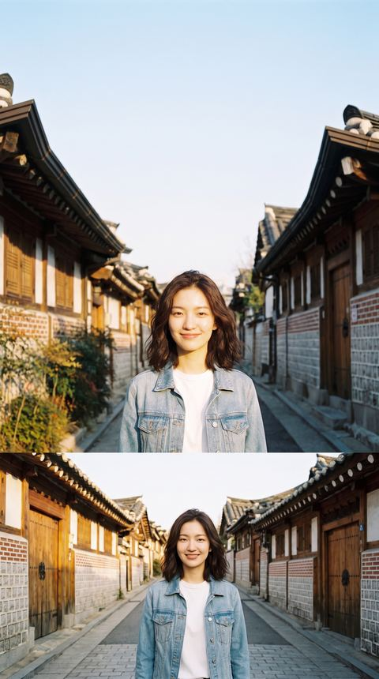
협찬 콘텐츠 연습이에요. 실제 회사가 아닌 가상 브랜드 "솜빛(SOMBIT) 드립백"으로 만들었어요. 제품도 Element로 등록하면 라벨이 매번 같게 나와요.
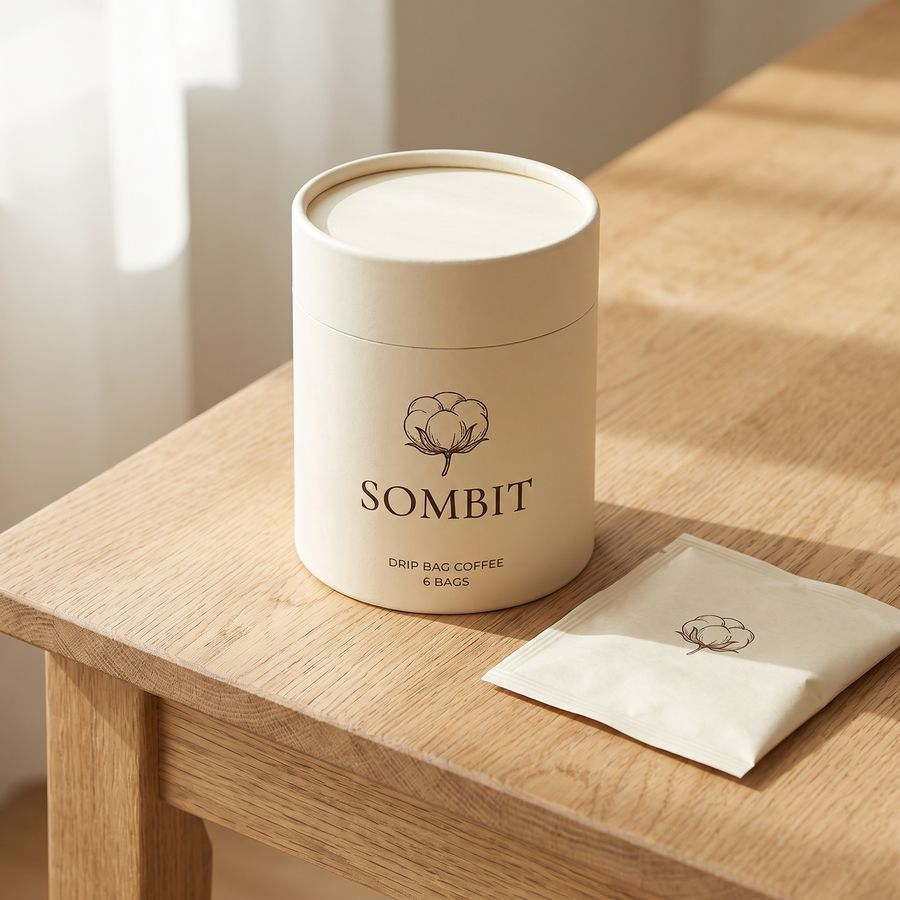
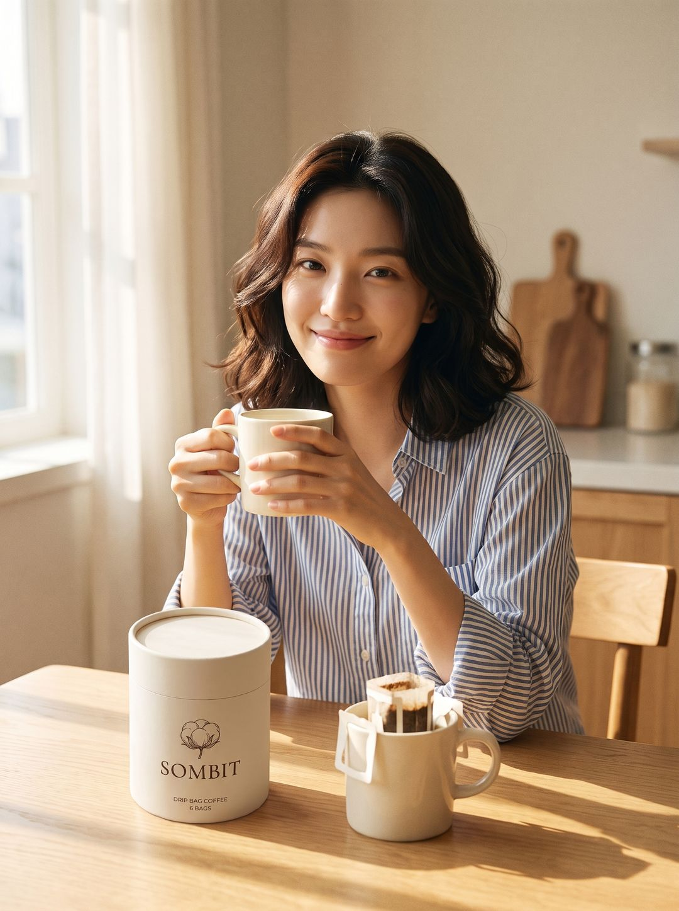
[광고] 솜빛 로스터리 유료 협찬 하린의 아침 한 잔 ☕️ 솜빛 드립백 6입. 컵에 걸고 물만 부으면 되는 구성이라 아침 루틴 장면에 잘 어울렸어요. (제품 정보는 브랜드 제공) #광고 #솜빛드립백 #홈카페 #드립백커피 #하린의아침한잔 #AI인플루언서
협찬 게시물은 첫 줄에 [광고]처럼 돈이나 제품을 받았다는 표시를 해요. 하린은 직접 마셔볼 수 없으니 "마셔보니 맛있다" 같은 후기는 쓰지 말고, 브랜드가 준 정보와 장면 위주로 써요.
제품 사진 1장만 받으면 피드 사진·릴스·스토리까지 만들 수 있다는 점을 제안서에 넣어요.
Virality Predictor는 영상을 보고 사람들의 반응을 예상해 점수를 매겨요(무료). 실제 조회수를 보장하진 않지만, 어느 부분이 약한지 비교할 때 써요.
| 릴스 | 종합 | 첫 3초 | 퍼질 가능성 | 끝까지 보기 |
|---|---|---|---|---|
| 자기소개 | ||||
| 자기소개 + 자막·첫 문구 | ||||
| 트렌드 효과 (소리 없음) | ||||
| 카페 브이로그 |
점수는 0~100이에요. 첫 3초는 주황색으로 표시했어요.
얼굴과 목소리로 말을 거는 자기소개가 가장 높았어요. 네 개 모두 첫 3초가 33~37점으로 가장 낮았어요.
자막과 "AI인데 성수 카페 다녀요" 문구를 넣은 버전은 54점에서 53점으로 거의 같았어요. 자막은 소리 없이 보는 사람을 위해 넣고, 점수를 올리려면 첫 장면을 바꿔야 해요. 예를 들어 라떼를 마시는 장면을 맨 앞에 두거나, 첫 1초에 크게 움직이는 장면을 넣어요.
한국어 영상을 넣으면 번역, 영어 음성, 입모양까지 다시 맞춰 줘요. 18개 언어
1초에 약 3.6크레딧이라 새로 만드는 것보다 비싸요. 한국어로 반응이 좋았던 릴스만 골라 영어·일본어로 만들어요.
이번에 쓴 힉스필드 연결에는 인스타로 바로 올리는 기능이 없어요(틱톡만 있음). 인스타는 앱이나 예약 도구로 올리고, 숫자를 적어서 다음 주 기획에 써요.
| 날 | 피드·릴스 | 스토리 |
|---|---|---|
| 1일차 | 릴스 · 자기소개 (자막판) | 자기소개 릴스 공유 |
| 2일차 | 피드 · 성수 카페 노트 ep.1 | 새 게시물 알림 |
| 3일차 | 쉬기 | 아침 투표 |
| 4일차 | 릴스 · 카페 브이로그 | 투표 결과 공유 |
| 5일차 | 피드 · 오늘의 작은 행복 no.2 | 질문 받기 |
| 6일차 | 릴스 · 트렌드 효과 (유행 음원 추가) | 질문 답변 |
| 나중 | 협찬 피드·릴스 (팔로워 1천 이후, 계약한 브랜드로) | 협찬 제품 비하인드 |
사진은 싸고, 영상과 더빙이 대부분이에요. 이 기록을 기준으로 보면 주 2릴스 운영에 한 주 70~100크레딧쯤 들 거예요(추정).
| 작업 | 도구 | 크레딧 |
|---|---|---|
| 얼굴 학습용 사진 8장 | Nano Banana Pro | 16 |
| Soul ID 학습 | Soul ID | 25 |
| 목소리 | Seed Audio | 0.6 |
| 제품 사진·첫 장면 사진 6장 | Nano Banana Pro | 12 |
| 피드·스토리 사진 6장 | Soul 2.0 | 0.72 |
| 세로로 늘리기 3번 (실패 1번 포함) | Outpaint | 6 |
| 자기소개 릴스 13초 | Wan 2.7 | 32.5 |
| 카페 브이로그 10초 | Kling 3.0 | 25 |
| 협찬 릴스 5초 | Kling 3.0 | 12.5 |
| 트렌드 효과 8초 (첫 시도 실패분은 자동 환불) | Viral 프리셋 | 36 |
| 영어 더빙 13초 | Dubbing | 47 |
| 점수 예측 4번 | Virality Predictor | 0 |
| 합계 | 213.32 | |
힉스필드 화면에서는 Element를 @harin처럼 불러와요. 영어로 쓰면 결과가 더 일정해서 영어로 썼어요.
대괄호 안만 바꿔서 8장. 각도·표정·장소·조명·옷을 매번 다르게.
Photorealistic candid photo of @harin, the same young Korean woman with the exact same face, shoulder-length dark brown wavy hair. [Three-quarter view turned to her left, laughing naturally, standing in a narrow red-brick alley in Seoul on an overcast day, navy cardigan]. Natural skin texture, unretouched, 35mm film look, no text.
Soul ID를 고르면 얼굴 설명은 안 써도 돼요. 장면·옷·빛만 적어요.
Candid film photo of a young Korean woman with shoulder-length dark brown wavy hair sitting at the window seat of a small red-brick cafe in Seongsu-dong, a latte with rosetta latte art and an open paper notebook on the oak table, vintage film camera beside the cup. She looks up at the lens with a soft warm smile. Cream knit cardigan over a white tee, late-afternoon sunlight, warm beige and brown tones, subtle film grain, authentic and unposed, no text, no logos.
안녕하세요, 저는 AI로 태어난 가상 인플루언서 하린이에요. 성수동 골목 카페랑 필름카메라를 좋아해요. 여기서 하루의 작은 행복들, 같이 모아봐요!
Photorealistic vertical front-camera video still of @harin, the same young Korean woman with the exact same face and shoulder-length dark brown wavy hair, sitting at a window seat in a cozy Seongsu-dong cafe. Medium close-up from the chest up, she looks straight into the lens at eye level as if talking to her followers, friendly relaxed expression with lips gently closed. Cream knit cardigan over a white tee, soft late-afternoon window light on her face, warm beige tones, softly blurred cafe interior behind her. Nothing between her and the lens: no phone, no tripod, no hands in front. 35mm film look, natural skin texture, no text.
Vertical talking-head video for Instagram Reels. The young Korean woman in the start frame talks directly to the camera, speaking the reference audio in Korean with accurate, natural lip-sync. Warm friendly expression, small natural head tilts and blinks, a small wave with one hand at the very first greeting, a soft smile at the end. Cozy cafe window seat, soft late-afternoon light, subtle handheld phone framing, 35mm film look. Keep her face, hair and cream cardigan identical to the start frame.
멀티샷을 켜고 컷마다 설명과 길이를 따로 넣어요. 옷이 바뀐 실패를 막으려고 마지막 줄에 옷을 다시 적은 고친 버전이에요.
Shot 1 (4s): @harin walks toward the camera along the red-brick Seongsu street at golden hour, smiles and gives a small wave, handheld tracking shot, footsteps and soft street ambience. Shot 2 (3s): close-up of her hand pushing open a wooden cafe door, a small door bell chimes, warm golden light inside. Shot 3 (3s): inside by the cafe window @harin takes a sip of an iced latte, looks up at the camera and smiles, soft cafe chatter and cups clinking. Same light denim jacket as shot 1.
Photorealistic lifestyle photo of @harin, the same young Korean woman with the exact same face and shoulder-length dark brown wavy hair, at a light oak kitchen table in soft morning light, smiling gently while holding a ceramic mug. The product @sombit-dripbag (cream cylindrical SOMBIT drip-bag coffee tube) stands clearly on the table in front of her, and a drip bag is brewing on a second mug. Blue-and-white striped shirt, warm beige tones, 35mm film look, product label clearly readable, no other brands, no extra text.
UGC-style product showcase. @harin holds the @sombit-dripbag tube toward the camera, pops the lid off, pulls out one cream drip bag, shows it to the lens with a happy smile, then glances toward the kettle. Handheld phone-video feel, soft morning kitchen light, warm film tone, the SOMBIT label stays sharp and readable. Sound: paper tube lid pop, soft kitchen ambience, a kettle starting to hum. No speech.